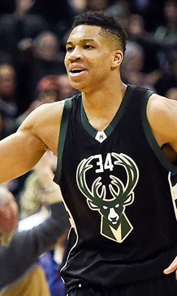

|  |
Матчи |
81 |
|
Передачи (всего/среднее) |
207 |
2.6 |
| В основе |
71 |
|
Подборы в защите (всего/среднее) |
442 |
5.5 |
| Время (всего/среднее) |
2540:37 |
31:22 |
Подборы в атаке (всего/среднее) |
100 |
1.2 |
| Очки (всего/среднее) |
1030 |
12.7 |
Подборы (всего/среднее) |
542 |
6.7 |
| 2-очковые броски (всего/среднее) |
376/736 |
4.6/9.1 |
Перехваты (всего/среднее) |
73 |
0.9 |
| 2-очковые броски (% реализации) |
51.1% |
|
Потери (всего/среднее) |
173 |
2.1 |
| 3-очковые броски (всего/среднее) |
7/44 |
0.1/0.5 |
Блокшоты (всего/среднее) |
85 |
1 |
| 3-очковые броски (% реализации) |
15.9% |
|
Блокшоты соперника (всего/среднее) |
65 |
0.8 |
| Штрафные броски (всего/среднее) |
257/347 |
3.2/4.3 |
Фолы (всего/среднее) |
254 |
3.1 |
| Яннис Адетокунбо |
Штрафные броски (% реализации) |
74.1% |
|
Коэффициент полезности (всего/среднее) |
958 |
11.8 |